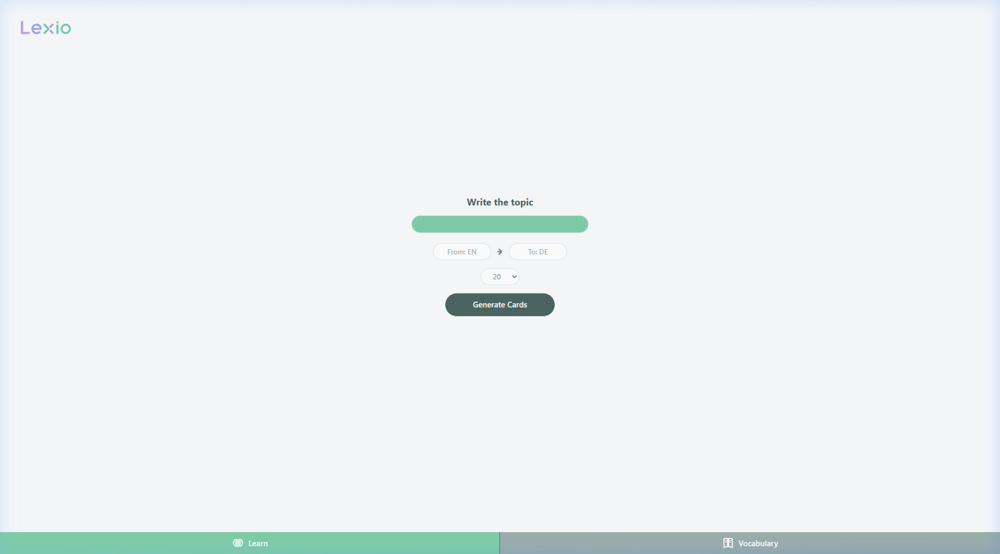
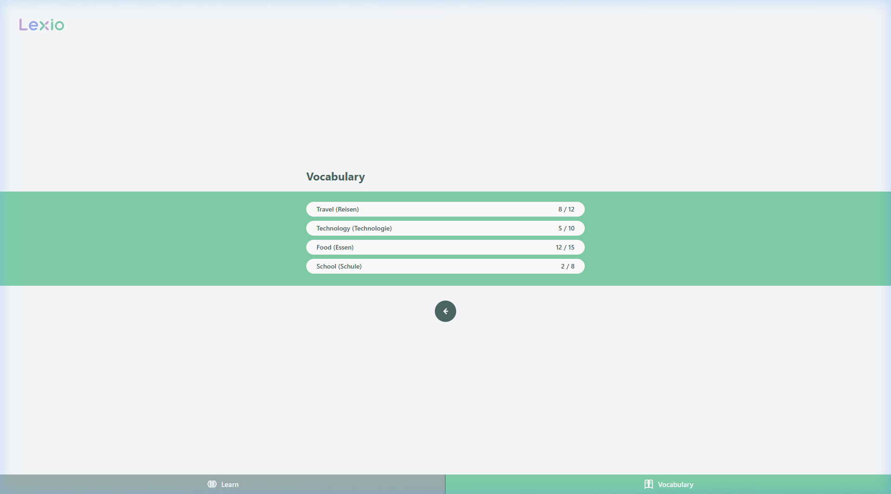
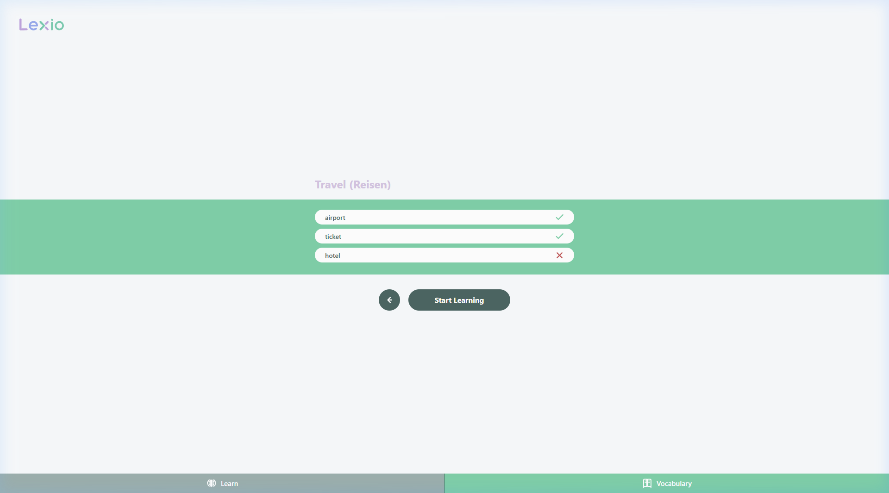
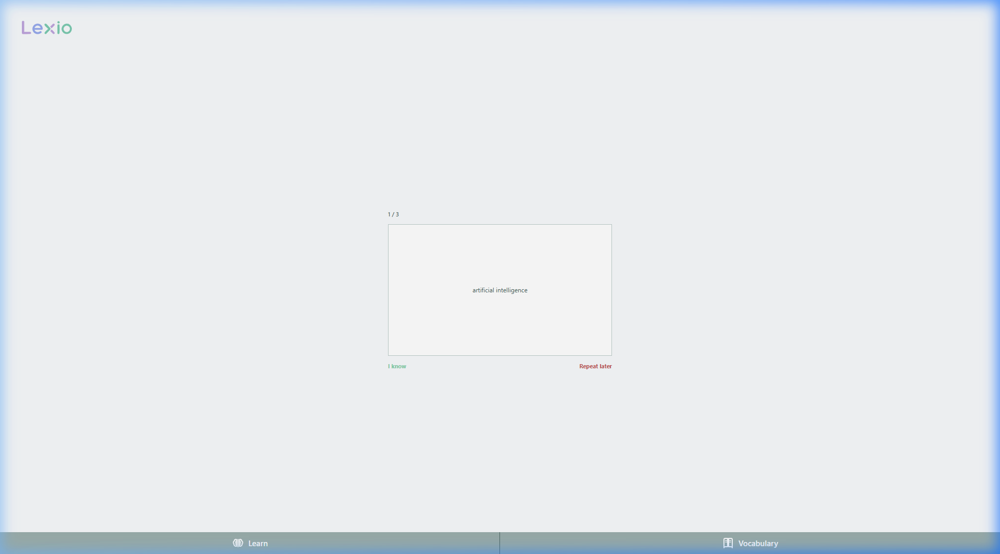

Künstliche Intelligenz im Bildungswesen
Wirtschaftliche Auswirkungen & praktische Anwendung eines intelligenten Vokabeltrainers (Lexio)
Die Herausforderung beim Sprachenlernen
- Statische Lehrbücher: Feste, oft unpersönliche Themen ohne Bezug zu aktuellen Schülerinteressen.
- Kein Kontext: Vokabeln werden isoliert gelernt, was die langfristige Einprägung erschwert.
- Aufwand für Lehrkräfte: Manuelle Erstellung von Übungen und Korrekturen kostet wertvolle Stunden.
- Mangelnde Adaptivität: Keine Anpassung an unterschiedliche Lerngeschwindigkeiten in einer Klasse.
- On-Demand Generierung: Vokabeln werden dynamisch zu jedem beliebigen Wunschthema der Schüler generiert.
- Automatisches Feedback: Direkte Korrektur und verständliche Kontexterklärungen in Echtzeit.
- Effiziente Verwaltung: Lehrer können Vokabelsets per Klick erstellen und Schülerleistungen direkt überblicken.
- Maximale Personalisierung: Die KI wählt Wörter, die zum Niveau und Lerntempo des Einzelnen passen.
Einsatzbereiche & Marktanalyse
- Was ist unser Themenbereich?
Einsatz von KI im Bildungswesen, speziell fokussiert auf KI-gestützte Sprachlernplattformen und personalisierte Tutoren. - Wo wird KI dort konkret eingesetzt?
Generierung von Lerninhalten (Sätze, Vokabeln, Übersetzungen), Analyse des Lernstands (Spaced Repetition) und Konversations-Chatbots. - Welche Unternehmen nutzen diese Technologie bereits?
- Duolingo: Nutzt GPT-4 für "Duolingo Max" (Features: Rollenspiele und Erklärungen von Fehlern).
- Quizlet: Bietet den KI-Lerncoach "Q-Chat" zur Abfrage und Erklärung.
- Babbel: Setzt KI zur Spracherkennung und Ausspracheprüfung ein.
Unternehmen, die bereits KI-Technologien in ihre Sprachlernlösungen integriert haben:
Duolingo Max
GPT-4 basierte Dialogsimulationen und Fehleranalyse.
Quizlet Q-Chat
Interaktiver Tutor, der Sokratische Fragen stellt.
Technik, Chancen & Risiken
Große Sprachmodelle (LLMs) sagen statistisch das nächste logische Wort voraus, basierend auf Milliarden gelesener Texte.
Durch gezieltes Prompting im Backend weisen wir die KI an, Vokabeln im strukturierten JSON-Format auszugeben:
{
"source_text": "airport",
"target_text": "Flughafen",
"topic": "Travel"
}
Unbegrenzte Themenauswahl, sofortiges Feedback, hohe Personalisierung und automatische Erstellung strukturierter Lerninhalte.
Potenzielle Übersetzungsfehler ("Halluzinationen"), fehlender didaktischer Faden und Datenschutzaspekte bei externer API-Nutzung (OpenAI).
Wirtschaftliche Aspekte: Kostenanalyse (3-Azubi Projekt)
Die wirtschaftliche Rentabilität eines KI-Systems hängt stark von den Entwicklungs-, Integrations- und laufenden Betriebskosten ab. (Klicken Sie auf eine Zeile für Details)
| Kategorie | Art | Kosten (Est.) | |
|---|---|---|---|
| CapEx (Entwicklung) | Einmalig | 0 € | |
| OpEx (Hosting) | Laufend | ~5 € / Mo. | |
| API-Gebühren | Laufend | ~0,1 Cent | |
| Schulung (Setup) | Einmalig | 0 € | |
| Wartung & Support | Laufend | 0 € |
- Eigenentwicklung im Team:
• Projektarbeit von 3 Auszubildenden (Fachinformatiker Systemintegration/Anwendungsentwicklung) im 2. Lehrjahr.
• Externe Entwicklerkosten: 0 € - Infrastruktur & Hardware:
• Nutzung bestehender Firmenrechner & Schul-PCs.
• Kostenfreie Open-Source Software (VS Code, Git, Python). - Zusätzliche Anschaffungskosten: 0 €
• Einziger Aufwand ist die reguläre Ausbildungszeit (ohne Zusatzkosten).
- Frontend Hosting (Vercel):
• Deployment des React Frontends auf dem Vercel Hobby Plan: 0 € / Monat. - Backend API & DB (Railway / Render):
• Deployment des FastAPI Backends + SQLite Datenbank auf Render (Hobby Instance): ~5 € / Monat. - Domain & DNS:
• Nutzung einer Subdomain der Schule/des Ausbildungsbetriebs: 0 €. - Gesamtes Cloud-Hosting: ~5 € / Monat (extrem günstig)
- Modellpreise (OpenAI):
• Input-Tokens: $0,15 per 1M Tokens (~750k Wörter)
• Output-Tokens: $0,60 per 1M Tokens - Kosten pro Vokabel-Generierung (20 Wörter):
• Input (Prompt): ~500 Tokens -> $0,000075
• Output (JSON): ~1.500 Tokens -> $0,000900
• Gesamt pro Session: $0,000975 (ca. 0,1 Cent!) - Skalierungs-Beispiel für Schulen:
• 1 Schüler (30 Sets/Monat): $0,029 (ca. 3 Cent) / Monat
• 1.000 Schüler / Jahr (360k Abfragen): $351,00 / Jahr
- Multiplikatoren-Modell:
• Die 3 Azubis führen die Einführungsschulung für Lehrer und Admins selbst durch.
• Externe Beratungsgebühren: 0 € - Dokumentation & Lehrmaterial:
• Erstellung digitaler Leitfäden (PDF) und Kurztutorials durch das Projektteam während der Arbeitszeit.
• Druck- und Materialkosten: 0 € (rein digital).
- Interner IT-Support:
• Übergabe an das interne Schul-IT-Team oder die Ausbildungsabteilung nach Projektabschluss.
• Externe Support-Verträge: 0 € - Fehlerbehebung (Bugfixing):
• Im Rahmen der regulären Betriebszeiten oder durch Folgeprojekte anderer Auszubildender.
• Zusatzkosten: 0 €
Wirtschaftliche Aspekte: Nutzenanalyse
Hohe Zeitersparnis
Lehrkräfte sparen ca. 90% Zeit bei der Erstellung individueller Vokabeltests. Die KI generiert fertige Lernsets in Sekunden statt in Stunden.
Skalierbarkeit & Effizienz
Ein einmal entwickeltes System kann von beliebig vielen Klassen und Schulen gleichzeitig genutzt werden, ohne dass proportionale Kosten entstehen.
Umsatzsteigerungspotenzial
Moderne KI-Features erhöhen die Attraktivität der Plattform. Dies ermöglicht höhere B2C-Abonnementpreise und attraktive B2B-Schullizenzen.
Fehlerreduktion
Durch standardisierte APIs und automatisierte Wortprüfungen werden manuelle Schreibfehler in Vokabellisten drastisch minimiert.
Der Prototyp: Lexio Vokabeltrainer
Lexio ist eine moderne Web-Anwendung, die die Anforderungen an die Programmierung vollständig erfüllt:
- ✓Eingaben verarbeiten: Der Benutzer gibt sein Wunschthema und Sprachen an.
- ✓Daten logisch auswerten: Das FastAPI-Backend fragt die GPT-API an, validiert das Ergebnis und speichert es in einer SQLite/PostgreSQL-Datenbank.
- ✓Ergebnis ausgeben: Der Benutzer lernt die Wörter via interaktiven Flashcards.
- ✓Modulare Architektur: Feature-Sliced Design (FSD) im React-Frontend.
- ✓Offline-Modus: Mock Service Worker (MSW) emuliert API-Anfragen für Tests.
Das System trennt strikt Präsentationsschicht (React) und Logikschicht (FastAPI) über RESTful-APIs.
Lexio Benutzeroberfläche (Screenshots)




Interaktive Vokabelkarte zum Testen (Klicken zum Drehen):
Die obige Karte demonstriert das Lern-Prinzip von Lexio direkt in dieser Präsentation.
Zusammenfassung & Ausblick
- Hoher Mehrwert: KI-gestützte Tools wie Lexio revolutionieren das Vokabellernen durch On-Demand Personalisierung.
- Wirtschaftlicher Vorteil: Trotz API-Nutzungsgebühren überwiegt der Nutzen durch enorme Zeitersparnis bei Dozenten und hohe Skalierbarkeit.
- Technisch machbar: Die Kombination aus React und FastAPI bietet eine performante, zukunftssichere Basis für Bildungs-Apps.
- Spracherkennung (STT): Integration von KI-Modellen (z.B. OpenAI Whisper) zur Analyse und Verbesserung der Aussprache.
- Lokale KI-Modelle: Unterstützung von Offline-Lernen durch Integration schlanker, lokaler LLMs (z.B. Llama 3) direkt auf dem Endgerät.
- Gamification: Implementierung von Erfahrungspunkten (XP), Abzeichen (Badges) und Bestenlisten zur Erhöhung der Schülermotivation.